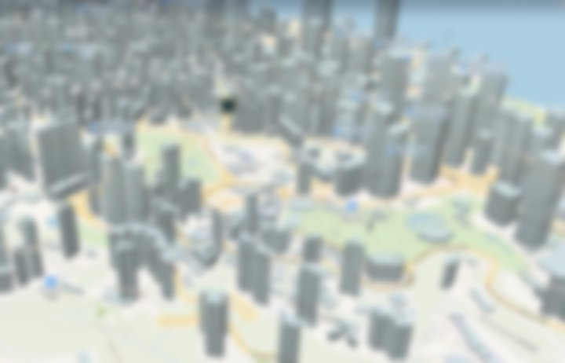
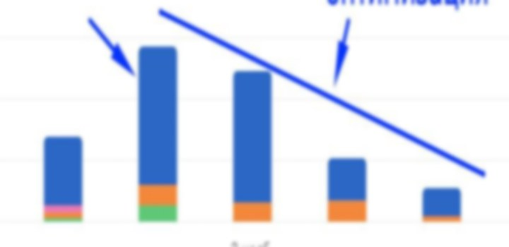

АНТОН СЕМАУН · AI PORTFOLIO
ПРИВЕТ!
МЕНЯ ЗОВУТ
АНТОН.
Каждый ИИ-адепт до того, как стал ИИ-адептом, имел прошлую жизнь. В своей я был режиссёром, постпродюсером и креативным директором. Это, конечно же, шутка, но не совсем)
Последние полтора года очень плотно работаю с AI. После того как я снял фильм на 25 летие ГПМХ я получил возможность освободиться себе время для изучения ИИ, того как он изменит мою профессию и того какие возможности он может мне дать. Дальше я покажу что уже получилось и что сейчас происходит.
РЕЖИССУРА
Документальные фильмы и реклама
ПРОДЮСИРОВАНИЕ
Постпродакшн и производство
AI
Инструменты и агентные системы
МОЙ ОПЫТ
РЕЖИССУРА / ПОСТПРОДАКШН / КРЕАТИВНОЕ РУКОВОДСТВО
РЕЖИССУРА
РЕЖИССУРА
ТРИ ДОКУМЕНТАЛЬНЫХ ПРОЕКТА
Forbes · Газпром-Медиа · «Креативный класс»
А ТАКЖЕ РЕКЛАМА ДЛЯ БРЕНДОВ
ROLF, YANDEX, SUZUKI, VIKEK и др.
ПОСТПРОДАКШН
ПРОДЮСИРОВАНИЕ
ОПЫТ
Индилайт · Ростелеком · НМГ ДОК
РОЛЬ
Ведение постпродакшна и работа с клиентом
КРЕАТИВНЫЙ ДИРЕКТОР
КРЕАТИВНЫЙ
ДИРЕКТОР
АГЕНТСТВО SVOI → ДЕПТРАНС
Моя гордость - выигранный годовой тендер для ВК спорт
РЕЗУЛЬТАТ
Серия роликов · >20 млн просмотров каждый
02
СЕЙЧАС Я РЕЖИССИРУЮ
ТЕЛЕВИЗИОННЫЙ ДОКУМЕНТАЛЬНЫЙ ФИЛЬМ ДЛЯ НМГ ДОК
Это первый мой проект для телевидения. Помимо интереса к формату с которым я еще не был знаком главным для меня толчком согласиться на этот проект был полный карт-бланш на использование ИИ. Так что помимо режиссуры я еще налаживаю постпродакшн как продюсер
Работа продолжается: студия, реконструкции, B-roll, расшифровки и VFX
AI
В ПРОИЗВОДСТВЕ
NMG DOC · WORK IN PROGRESS
КАДРЫ ИЗ РАБОЧИХ МАТЕРИАЛОВ · НМГ ДОК
03
НМГ ДОК · ПОДРОБНЕЕ
ТРИ ОБЛАСТИ ПРИМЕНЕНИЯ (НА САМОМ ДЕЛЕ ИХ БОЛЬШЕ)
РАКУРСЫ И ДЕТАЛИ
ИСХОДНАЯ СТУДИЯ
ФИНАЛЬНЫЙ РЕНДЕР
СОЗДАНИЕ ВИРТУАЛЬНОЙ СТУДИИ
СТУДИЯ
ЗАДАЧА
Декорация не устраивала канал, бюджета на пересъёмку не было.
РЕШЕНИЕ
Blender · текстуры · Genjutsu. Обновлённый вид студии.
ГЕНЕРАЦИЯ B-ROLLов
B-roll
ЗАМЕНА СТОКОВ НА ИИ
Воссоздание документальных сцен и дополнительных планов.
ПРОЦЕСС
У студии были стрингеры в разных странах, но я настроил "завод" (модное слово) для генерации намного более качественных кадров.
УПРОЩЕНИЕ ПРОИЗВОДСТВА
РАСШИФРОВКА
РАНЬШЕ
Студия отдавала материалы на машинную расшифровку, она была долгой дорогой и некачественной
ТЕПЕРЬ
Настроил все для расшифровки, и теперь ее могут делать даже продюсеры.
04
ДОПОЛНИТЕЛЬНЫЕ КЕЙСЫ
ЗНАКОМЫЙ ПОПРОСИЛ ПОМОЧЬ С ДИПЛОМОМ СВОЕМУ ДРУГУ
ИНТЕГРАЦИЯ ГРИМА
ГРИМ
ИСХОДНЫЙ КАДР
Грим на площадке не соответствовал замыслу. Использовал (тут вставить нужный пайплайн) и получилось как надо
AI INFLUENCER
AI INFLUENCER
ОДНОЙ КОМПАНИИ ТРЕБОВАЛСЯ AI-ИНФЛЮЕНСЕР
Сейчас облачные модели могут неплохо делать консистентность. И это для коротких рекламных роликов окей. Но если нужны длинные форматы, кино, анимация, то обучение LoRA всё ещё надёжней и по итогу быстрее.
ПОНЯЛ, ЧТО САМ МОГУ ДЕЛАТЬ КУРСЫ :)
ИНТЕРНЕТ-КУРСЫ
Решил пройти курсы и понял, что уже знаю больше, чем на них преподают.
В прошлом году читал лекции по рекламной режиссуре, так понравилось, что решил сам пройти курсы. В итоге сделал неплохой ролик в связке Blender + Banana, но понял, что ничему новому меня не научили.
05
AI-ИНТЕГРАЦИЯ
ГДЕ ИИ РЕАЛЬНО МЕНЯЕТ КАЧЕСТВО РАБОТЫ
Я часто сталкиваюсь с двумя крайностями: «ИИ нас всех заменит» и «ИИ — это просто ещё один инструмент». Мне ближе другое: ИИ — это новый уровень взаимодействия с цифровой средой. Он не отменяет профессию, а меняет скорость, глубину и масштаб работы.
Если совсем по-простому, специалист, который сегодня работает с диджиталом без ИИ, немного похож на человека, который пришёл на кухню шефа и вместо плиты решил развести костёр. За последние полтора года я собрал собственную инфраструктуру: маршрутизацию, контекст проектов, автоматизацию рутины, локальные и облачные модели.
01
САБМИТТЕР
Сделал для артиста приложение, которое в фоне через браузер сабмитит его работы в галереи разных групп. Есть возможность подключить LLM, чтобы решать вопросы, не переделывая код.
02
SMM-АНАЛИТИКА
Создал приложение для компании, которое собирает статистику, записывает её в нужном формате, проводит первичный анализ и пушит вывод в GitHub.
03
REELS
Пять лет сохранял себе классные монтажные и колористические приёмы в Instagram, и сейчас понемногу автоматизирую их в DaVinci.
Беру то, что делают топовые мировые студии, и применяю это сам.
Беру то, что делают топовые мировые студии, и применяю это сам.
04
ИГРОВОЙ ПРОТОТИП
Очень люблю геймдев, но переход туда требовал больших затрат.
С ИИ сделал прототип за выходные, причём не бессмысленный бой, а системы выбора целей, движения, экономики и боевой механики.
С ИИ сделал прототип за выходные, причём не бессмысленный бой, а системы выбора целей, движения, экономики и боевой механики.

05
3D-ГОРОД
Собрал реальную модель города для сайта, сделал текстуры, динамическое освещение (двумя способами) и сильно упростил разработку главного экрана браузерной игры.
06
СЮЖЕТНЫЕ ВЕТКИ
Каждая большая студия всегда делала свой собственный софт для уникальных процессов.
Я собрал себе сценарное приложение, которое всегда мечтал иметь: с ИИ-агентами, возможностью писать нелинейный сценарий и смотреть его в 3D-проекции.
Я собрал себе сценарное приложение, которое всегда мечтал иметь: с ИИ-агентами, возможностью писать нелинейный сценарий и смотреть его в 3D-проекции.
07
МОДЕЛИ И АГЕНТЫ
ИИ развивается так быстро, что исследование новинок можно выносить в отдельную специальность. Я уже плюс-минус собрал свой стек, но постоянно тестирую всё новое.

08
ЭКОНОМИЯ ТОКЕНОВ
В начале ИИ-бума компании хвастались, сколько токенов потратят их сотрудники. Сейчас они хвастаются экономией. Каждый свой автоматизированный процесс я сделал практически бесплатным.
09
КОНТЕКСТ ПРОЕКТОВ
Все эти системы потеряют большую долю своей эффективности, если не будут работать в рамках одного переносимого контура.
Я сделал себе такой и могу переносить его на любое устройство и подключать любую модель без потери контекста.
Я сделал себе такой и могу переносить его на любое устройство и подключать любую модель без потери контекста.
AI
WORKFLOWS
Автоматизация · новые возможности · собственная инфраструктура
06

КОНТАКТЫ
АНТОН СЕМАУН
Режиссура · AI production · Постпродакшн
07